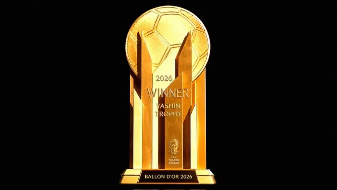

Nigerians missing as 2026 Ballon d'Or Winner emerges today

For the first time in three years, Nigeria will watch the Ballon d’Or from the outside, as the 2026 winner is named on Monday (today) at the London Palladium, with Harry Kane, Lamine Yamal and Kylian Mbappe leading the race.
No Nigerian appears on the men’s shortlist, the women’s list or any of the other trophy categories.
The ceremony, the 70th edition of the award, starts at 8 pm in London, which is 9 pm in Nigeria. It is the first time the gala has been staged outside Paris, and Kate Scott and Thierry Henry will host.
The absentees include two men many Nigerian fans expected to see.
Victor Osimhen and Ademola Lookman scored seven of the Super Eagles’ 14 goals at the 2025 Africa Cup of Nations and were among the tournament’s top four scorers. Osimhen ended the 2025/26 season with 30 goal contributions in all competitions, while Lookman managed 12 goals and six assists.
Numbers like those would ordinarily keep Osimhen in the conversation, but this year’s assessment window ran from August 3, 2025, to July 19, 2026, the day of the World Cup fina
Nigeria did not qualify for the tournament, and performances on the biggest international stage carry heavy weight with the judges.
The omission closes a short but notable chapter.
Osimhen finished eighth in 2023 after a prolific campaign that brought Napoli the Serie A title. A year later, Lookman placed 14th after scoring a hat-trick in Atalanta’s Europa League final win over Bayer Leverkusen and having a prolific AFCON campaign.
Last year the recognition came from the women’s game